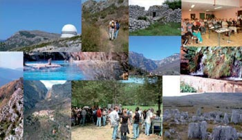

<link href="../css/style.css" rel="stylesheet" type="text/css">
<ion-view view-title="Accueil">
    <ion-content class="padding">
        <div class="list card">
          <div class="item item-body">
            <div><b><span class="titre">Le <b>patrimoine remarquable</b> de la communauté d'agglomération</span><br>
            <br>
            Riche d’un patrimoine exceptionnel, la Communauté d’Agglomération Sophia Antipolis entend le protéger et le valoriser.</b>
                  <br />
                  L’étude, dont ce site est l’illustration, n’est pas exhaustive. Elle met en avant les éléments les plus remarquables ou ceux qui ne sont pas protégés et évoquent le passé de notre territoire.
                  <br />
                  Des entretiens avec les représentants des communes, offices de tourisme, associations, principaux acteurs institutionnels (DRAC, SDAP, CG06…) ont éclairé nos choix, au-delà de l’utilisation de différentes sources bibliographiques et de repérages sur sites.
                  <br />
                  Afin de prendre en considération les spécificités des communes de la CASA et apporter une vision d’ensemble et dynamique du territoire, nous avons défini 6 thématiques majeures
                  <ul>
                    <li>&#149; le patrimoine naturel et paysager,</li>
                        <li>&#149; les sites historiques,</li>
                        <li>&#149; le patrimoine religieux,</li>
                        <li>&#149; le patrimoine vernaculaire,</li>
                        <li>&#149; le patrimoine artistique,</li>
                        <li>&#149; le patrimoine contemporain.</li>
              </ul>
                    <br />
                    <b>Cette étude a été supervisée par un comité scientifique du Centre d’Études Préhistoire Antiquité Moyen-Âge (CNRS Sophia Antipolis)</b>, dirigé par Didier BINDER et dont la coordination a été confiée à Suzanne ROSCIAN, ingénieur documentaliste.
                    <br />
                    <b> Ont participé à ce comité scientifique:</b>
                    <ul>
                        <li>
                            &#149; Pascal ARNAUD, Professeur d’Histoire ancienne à l’UNSA et Directeur de la Maison des Sciences de l’Homme à Nice
                        </li>
                        <li>
                            &#149; Pierre-Yves BEAUREPAIRE, Professeur d’Histoire moderne à l’UNSA et Directeur du Centre de la Méditerranée Moderne et Contemporaine
                        </li>
                        <li>
                            &#149; Didier BINDER, Préhistorien, Directeur de recherche au CNRS et Directeur du Centre d’études Préhistoire Antiquité Moyen-Âge
                        </li>
                        <li>
                            &#149; Jean-Marie CASTEX, Professeur honoraire de Géographie à l’UNSA
                        </li>
                        <li>
                            &#149; Marie-Hélène FROESCHLE-CHOPPART, Historienne moderniste, Directrice de recherche honoraire au CNRS
                        </li>
                        <li>
                            &#149; Philippe JANSEN, Professeur d’Histoire médiévale à l’UNSA et Directeur de l’École doctorale Lettres, Arts et Sciences Humaines
                        </li>
                        <li>
                            &#149; Michel LAUWERS, Professeur d’Histoire médiévale à l’UNSA et Directeur-adjoint du CÉPAM
                        </li>
                    </ul>
              <p><br />
                    Claude VERRIER, <b>
                        Directeur du Service Départemental de l’Architecture et du Patrimoine
                    </b> a également contribué au contenu de cette étude.
                    </p>
                    <div class="position_gauche">hgfhfg</div>
					<div class="position_gauche">hfghfg</div>
                    <div class="position_centre">fgh</div>  
                    <p>&nbsp;</p>
                    <p>&nbsp;</p>
            </div>
            </div>
        </div>
    </ion-content>
</ion-view>
